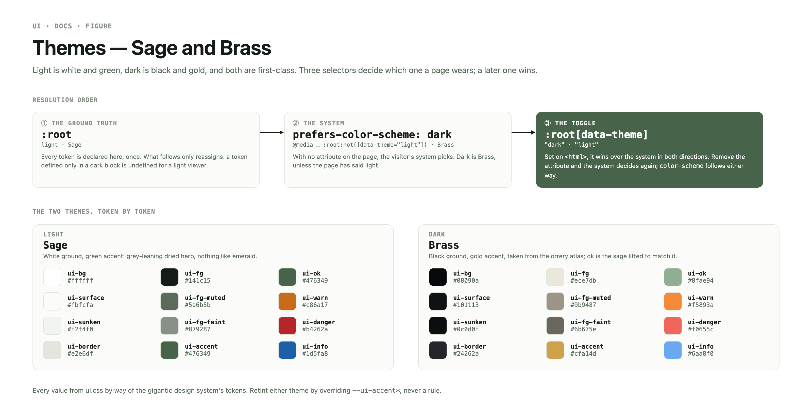
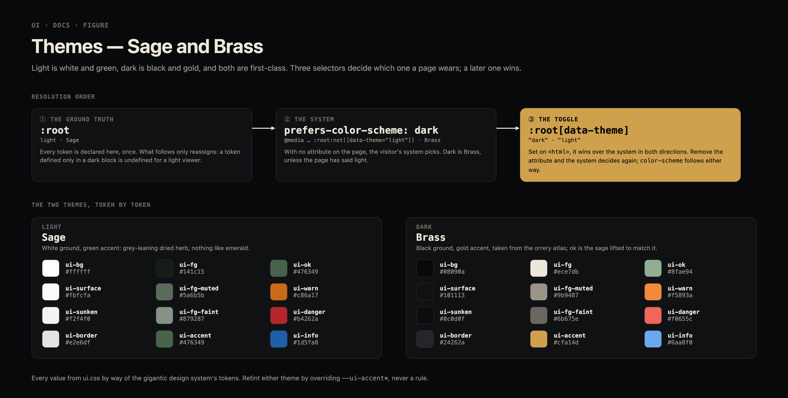
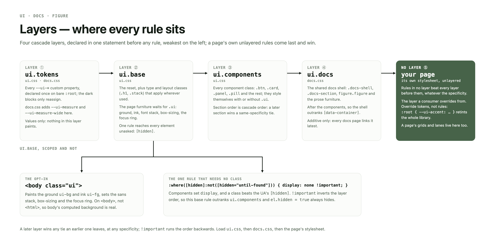
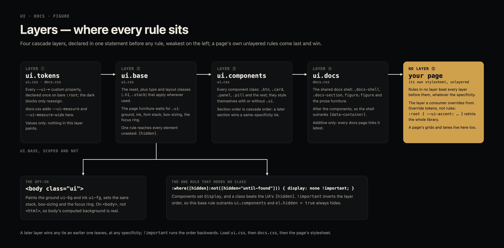

foundation
Use
A semantic component stylesheet in the spirit of DaisyUI, but pure CSS on custom
properties. ui.css is the whole library: no build step, no framework
dependency, no network requests.
<html class="ui"> <link rel="stylesheet" href="https://gigantic.dev/ui/ui.css" />
.ui is the opt-in base layer: page background, ink,
font stack, box-sizing, focus ring. Omit it and only the components
style themselves — safe for dropping the library into a page that already has opinions.
Put it on <body> rather than <html>
when anything reads body's background — see
two rules that bite.
State is .is-* or an ARIA attribute, never
both for the same fact. The classes are .is-active,
.is-busy, .is-collapsed,
.is-current, .is-down,
.is-muted, .is-on,
.is-paused and .is-warned; the attributes,
where one exists, are [aria-pressed],
[aria-current], [aria-invalid] and
:disabled.
The component names are the documentation; everything else is discoverable by
reading ui.css: layout and type sit in its base layer, every other
family in its components layer under a /* ── name ── */ banner —
related families share one (chip with the status dot; code, kbd and metric with the
readout).
MIT © 2026 Joshua Geschwendt — full text in LICENSE.
The vendored Phosphor glyphs carry their own MIT notice in icons/LICENSE;
both travel with the files.
foundation
Tokens
Every colour, size and duration in the library is a custom property on
:root. Nothing else is configuration — retinting the library
means overriding tokens, never rules.
Palette
The token contract
Light is the ground truth: every token has its definition on bare
:root, and the dark blocks only reassign. A token defined
only inside a dark block is undefined for a light viewer.
| group | tokens | light → dark |
|---|---|---|
| surfaces | --ui-bg --ui-surface --ui-surface-raised --ui-sunken --ui-border --ui-border-strong |
#ffffff → #08090a |
| ink | --ui-fg --ui-fg-muted --ui-fg-faint --ui-fg-inverse |
#141c15 → #ece7db |
| accent | --ui-accent -hover -active -fg -soft -soft-fg -ring |
sage #476349 → brass #cfa14d |
| status | --ui-ok --ui-warn --ui-warn-ink --ui-danger --ui-info, each with a -soft |
five hues, and only five |
| type | --ui-font-sans --ui-font-mono --ui-text-2xs…2xl --ui-weight-* --ui-leading-* --ui-tracking-* |
identical in both |
| metrics | --ui-space-1…7 (4·8·12·16·24·32·48px), --ui-radius-sm|md|lg|full |
identical in both |
| depth | --ui-shadow-sm|md|lg --ui-glow |
--ui-glow: none → a brass halo |
| motion | --ui-fast (110ms) --ui-slow (240ms) --ui-ease |
identical in both |
Per-component hooks
Set these inline or in a wrapper rule; they are the only knobs a component reads that the palette does not supply.
| property | read by | default |
|---|---|---|
| --ui-container | [data-container] max width | 100rem |
| --ui-grid-min | [data-grid] column floor | 280px |
| --ui-icon-size | .icon | 1.15em |
| --ui-meter-value | .meter fill | a percentage |
| --ui-orb-size | .orb | 34px |
| --ui-panel-accent | .panel head rail and name | --ui-accent |
foundation
Token reference
Every --ui-* custom property the library defines,
one row each, light beside dark. The rows are parsed out of
ui.css when this page loads — the same stylesheet the page is
wearing — so the reference cannot drift from the tokens it documents.
Swatches are painted from the parsed literal, not through
var(): the light column stays light while you read this in dark.
A dark cell shown dim is a token the dark blocks never reassign — the light value
is the dark value.
| token | light | dark |
|---|---|---|
reading ui.css… | ||
foundation
Theming
Light is white and green; dark is black and gold. Both are first-class, and a manual toggle wins over the system in both directions.
| selector | wins over |
|---|---|
| :root | — light is the ground truth; every token is defined here |
| @media (prefers-color-scheme: dark) :root:not([data-theme="light"]) | the system default |
| :root[data-theme="dark"] | a light system |
| :root[data-theme="light"] | a dark system |


:root is Sage, the system's dark is Brass, and data-theme overrides both. Source: Claude Design canvas ui figures, board Themes.That is the whole contract. The toggle in this page's appbar is exactly it — three buttons writing (or removing) one attribute:
document.documentElement.dataset.theme = "dark"; // explicit document.documentElement.removeAttribute("data-theme"); // back to the system
color-scheme is set alongside, so native form
controls, scrollbars and Highlight follow.
Retheming
Override tokens, not rules. Anything under --ui-accent*
retints the whole library:
:root { --ui-accent: #7c3aed; --ui-accent-soft: #f1eafe; --ui-accent-soft-fg: #5b21b6; }
Bring your own hues, in our shape
The library ships five semantic hues and that is the whole vocabulary, on
purpose: once --ui-danger means "series 4", nothing on the page can
mean danger any more. Declare your own tokens under your own prefix and feed them to the
--ui-* hooks.
Two rules keep it honest: never redefine a --ui-*
token to mean something non-semantic, and check your hues against --ui-bg
in both themes — the library's contrast measurements say nothing about colours it has
never seen.
Sage and brass
Two voices, one per theme. Sage carries light mode:
grey-leaning and dried-herb, hue 124 at 28% saturation, nothing like emerald.
#476349 is the accent and --ui-ok both;
#eaefe9 is its tint. The light neutrals carry the same faint sage cast,
a hair warmer and greyer than before, so the surfaces sit underneath the accent instead of arguing
with it.
Brass carries dark mode, taken from the orrery atlas:
#cfa14d. It is the accent and nothing else. Warn used to be brass too —
gold was that theme's whole voice and a warning read as emphasis — but a warning that is
indistinguishable from the accent cannot warn, so warn moved to orange:
#f5893a in dark, #c86a17 in light. Hue 25–28
against brass's 39, at 90% saturation against brass's 58, and far enough from danger's red (hue 4
dark, 358 light) to stay its own signal. Dark --ui-ok is the sage lifted
to #8fae94 and luminance-matched to brass (8.2 vs 8.4 on
--ui-bg), so the green and the gold never fight for the eye.
Measured: sage on white 6.7:1, on its own tint 5.7:1, white-on-sage 6.7:1;
brass on --ui-bg 8.4:1, #ddb56b (hover, and
the ink for soft-tinted pills) 10.3:1, ink-on-brass 8.0:1. Every accent pairing clears AA.
Light-mode #c86a17 reads 3.8:1 on white (3.4:1 on its
tint, 3.7:1 on --ui-surface, 3.4:1 on --ui-sunken)
— sound for borders, dots and meter fills, under AA for small text. That is what
--ui-warn-ink is for: #9c500f, the same orange
darkened, at 5.9:1 on white and 5.3:1 on
--ui-warn-soft (5.7:1 on --ui-surface,
5.3:1 on --ui-sunken). Every light-mode warn text colour —
.pill-warn, .badge-warn,
.chip-warn b, .strip-warn, and
.is-warned's row name — is drawn in the ink, while backgrounds, borders
and fills keep --ui-warn. In dark mode the ink aliases straight back to
warn: #f5893a is 8.1:1 on --ui-bg, 7.7:1 on
--ui-surface, and 6.8:1 on its own tint, so one value carries fill and
sentence both. A light-mode warn can carry a sentence, and the standing contrast exception stays
closed.
Two rules that bite
On <html>, <body>
stays transparent. CSS propagates the root element's background to the canvas, which
paints the viewport correctly but leaves the computed background of both elements at
rgba(0, 0, 0, 0). Anything reading body's
background — a nested scroll container, a screenshot tool, an embedded widget — sees nothing. Put
.ui on <body> instead, or set
body { background: var(--ui-bg); } alongside it.
[hidden] is guarded in the base layer
— :where([hidden]:not([hidden="until-found"])) { display: none !important; }
— because components set display and a component class beats the UA's
rule. Without the guard, el.hidden = true silently does nothing on a
pill, a panel or a strip.
foundation
The reset
.ui carries a small modern reset — the Andy Bell / Josh
Comeau line, adapted. It corrects the UA where the UA is wrong for a layout engine, and
stops.
| rule | why |
|---|---|
margin: 0 on blockquote, body, dd, dl, figure, h1–h6, p, pre | UA margins are vertical rhythm from a document engine; here spacing belongs to .stack, .row, [data-grid] and the components' own padding |
list-style: none; padding-left: 0 on ol[role="list"], ul[role="list"] | lists opt out by saying so |
display: block; max-width: 100% on canvas, img, picture, svg, video | replaced elements are boxes, not letters — no baseline gap, no overflow |
font: inherit on button, input, select, textarea | controls opt out of inheritance for historical reasons only |
cursor: pointer on button | |
overflow-wrap: break-word on h1–h6, p | a URL or a device id must not widen the page |
prefers-reduced-motion: reduce → near-zero animation and transition durations, scroll-behavior: auto | the preference is a request to stop moving, not to stop three named animations. Near-zero rather than none, so transitionend still fires and code awaiting one does not hang |
Every rule is wrapped in :where(.ui …), so it carries
specificity zero: components override it by living in a later layer, and a
consumer overrides it with any selector at all. Two consequences worth knowing:
- A component must own its own leading if it sizes off it.
font: inherithands a control the body'sline-height, not the UA'snormal— which is why.btn,.segmented > button,.input,.selectand.textareaeach declare aline-height. A new control that does not will be about four pixels taller than its neighbours. - A percentage
max-widthcontributes nothing to a flex parent's max-content width. An inline sparkline<canvas>with a fixed pixel width inside a content-sized flex row needsmax-width: noneback, or the row sizes short.
Why not Preflight
Tailwind's Preflight is a global reset for a utility-first world where every element is expected to be dressed by classes. This library is semantic and opt-in, and three things follow:
- Scoped, not global. Nothing here applies without
.uion an ancestor. Drop the class and the page gets the UA back whole — which is the same promise the rest of the base layer makes. - Semantic elements keep their meaning. Preflight unstyles
<ul>,<ol>,<h1>and<button>down to nothing. A bare<ul>here keeps its indent and its bullets, a bare<button>still looks like a button, and headings keep their size — a semantic library whose bare markup lies is worse than no library. Removing list markers is a decision the markup makes withrole="list". - No double reset. Loading
ui.cssnext to Tailwind gives you Preflight and this, and the two disagree about<ul>and<button>. Imported into Tailwind'scomponentslayer, everyuilayer sorts after Preflight'sbase, so the classed components keep their padding, margins and borders. Bare markup is another matter: the scoped reset leaves lists, heading sizes and<button>chrome to the UA rather than restating them, so Preflight still strips those, inside.uitoo. If you own the Tailwind config, disabling Preflight leaves the scoped reset as the only one. See Tailwind.
foundation
Type
Class-based, not element-based: the heading level is the document's business, the size is the design's.
eyebrow
Heading one
Heading two
Heading three
A lead paragraph carries the sentence a section opens on.
Body copy is the default — no class needed inside .ui.
Muted copy steps back one notch.
Faint copy steps back two, and must not carry meaning alone.
mono 00:12.401 · seq 1041
A link inside a sentence.
| class | is |
|---|---|
| .h1 .h2 .h3 | the display scale, independent of h1…h6 |
| .eyebrow | small caps label above a heading |
| .lead | the opening sentence, one step up from body |
| .muted | --ui-fg-muted — still AA |
| .faint | --ui-fg-faint — decoration, never the only carrier |
| .mono | the mono stack at body size |
| .link | an accented, underlined anchor |
foundation
Layout
A handful of primitives, no grid system. Anything more specific than these belongs to the page, not the library.
| class | is |
|---|---|
| .row | wrapping flex row, centred cross-axis |
| .stack | vertical flow with one gap |
| .spacer | flex: 1 — pushes what follows to the end |
| .hr | a one-token rule |
Layout primitives (attributes)
Three names — grid,
container, table — are also names Tailwind
claims as utilities. Rather than rename them or prefix the library, they are carried as
data attributes: Tailwind never emits an attribute selector, so the collision is
impossible by construction, the names survive, and specificity is unchanged
(0,1,0 either way). The rule: a layout primitive Tailwind also
claims is an attribute; a component is a class.
| attribute | is |
|---|---|
| [data-container] | centred, max --ui-container, gutters |
| [data-grid] | auto-fit columns with a --ui-grid-min floor |
| [data-table] | the table skin — documented under Table |
<main data-container> <div data-grid style="--ui-grid-min: 340px">…</div> <table data-table class="table-hover">…</table> </main>
The --ui-container / --ui-grid-min
hooks keep working. Every other component stays a class, including the table modifiers
(.table-hover, .table-mono,
.table-num, .table-wrap), which Tailwind does not
claim.
controls
Button
One base class and a modifier for the job. Sizes are orthogonal to variants,
and a latched button is .is-on — never a second variant class.
| class | is |
|---|---|
| .btn | the base — always present |
| .btn-primary | filled accent; one per view |
| .btn-danger | filled danger, for a destructive commit |
| .btn-ghost | transparent until hover — for a row’s own actions |
| .btn-quiet | sunken fill, muted ink — the toolbar default |
| .btn-outline | + -accent -info |
| .btn-sm .btn-lg | sizes; combine with any variant |
| .btn-icon | square; needs an aria-label |
| .btn-group | joins buttons into one control |
| .is-on | latched. Not aria-pressed as well — one fact, one carrier |
controls
Inputs & selects
A field is a label, a control and an optional hint. Validity is
aria-invalid, because the attribute already exists.
On iOS only, every control here is floored at 16px — Safari zooms the viewport in on a focused field under that and never zooms back out — so the compact sizes below stay compact everywhere the zoom cannot happen.
| class | is |
|---|---|
| .field | the label / control / hint stack |
| .label | the control's name |
| .hint | the sentence under it |
| .input | + -sm -lg -mono -num (tabular, right-aligned) -invalid |
| .select | + -sm; caret drawn, gutter reserved |
| .textarea | the same skin, resizable |
| [aria-invalid] | the danger ring — prefer it to .input-invalid |
The iOS floor
Safari on iOS zooms the viewport in whenever it focuses a form control computing
under 16px, and it does not zoom back out — one tap on a toolbar filter leaves the page magnified.
The compact scale is entirely under that line: with .ui on the root the
rem tokens resolve against --ui-text-md, so the controls measure 10.5px
(-sm), 11.375px (.input,
.select, .textarea) and 14px
(.input-lg). So ui.css carries an iOS-only
floor:
@supports (-webkit-touch-callout: none) {
.input, .input-lg, .input-sm, .select, .select-sm, .textarea { font-size: 16px; }
}
-webkit-touch-callout is WebKit-on-iOS and nothing
else, which is the point: the compact scale is untouched everywhere the zoom cannot happen. The two
usual fixes are worse — maximum-scale=1 in the viewport meta buys it by
taking pinch-zoom away from everyone, and a blanket 16px inflates every toolbar on desktop. The
-sm widths are ch-based, so they grow with the
text on iOS instead of clipping it. A new control with its own font-size belongs in that block
too.
controls
Toggle & segmented
A toggle wraps a real checkbox, so it is focusable, form-serialisable and keyboard-operable with no script at all.
aria-pressed carries itThe appbar's theme control is a segmented group — its three buttons are the entire theming API.
status
Pill, badge, chip, dot
Four shapes for four jobs. A pill is a state, a badge is a count or a tag, a chip is a labelled value, a dot is a light.
<b>| class | moods | use for |
|---|---|---|
| .pill | -accent -danger -info -ok -warn | a state; .is-active for the current one |
| .badge | -accent -danger -info -ok -warn | a count or a short tag |
| .chip | -danger -ok -warn | a labelled value; .chip-row groups them |
| .dot | -danger -info -ok -warn | a light; .dot-pulse while live |
.dot-pulse stops under
prefers-reduced-motion, so the dot must never be the only carrier of
"live" — pair it with a word, as every example above does.
status
Notice
Boxed, rounded, wraps, lives inside a layout. A notice is content; the bar across the top of the window is a strip.
ears channel.
| class | is |
|---|---|
| .notice | neutral box; an icon and a <span> inside |
| + -danger -info -ok -warn | tint, border and rail |
status
Strip
Chrome: full-bleed, one line, small mono. It belongs directly under
.appbar as a sibling — outside
[data-container], so it spans the viewport.
A strip does not survive
el.className = "strip-warn". Wholesale assignment drops
.strip itself, and a mood modifier alone styles nothing, so the
bar collapses to unstyled text. Toggle the mood class:
strip.classList.remove("strip-ok", "strip-warn");
strip.classList.add("strip-danger");
| class | is |
|---|---|
| .strip | the bar; display: flex |
| .strip-tag | the channel name at the left |
| .strip-msg | the sentence; truncates rather than wraps |
| + -accent -danger -info -ok -warn | the mood |
status
Meter
One track, one fill, one custom property. The value is CSS, not a width attribute, so a page can drive it from a rule as easily as from script.
The single child <span> is the fill and is
required — the track cannot paint itself and animate at once. Set the value with
el.style.setProperty("--ui-meter-value", pct + "%").
| class | is |
|---|---|
| .meter | the track; accent fill |
| + -warn -danger | the fill's mood |
status
Metric & readout
A metric is one number a human reads at a glance. A readout is a log a human reads a line at a time — mono, pre-wrapped, with keys and timestamps tinted.
-delta-up means better, not
larger: latency falling by 38 ms is an up-delta. The direction is the judgement, which is
the only thing a colour can usefully carry.
00:12.401 ears.partial "set the kitchen light to" 00:12.688 eot.head p=0.41 head=prosody 00:13.002 ears.final "set the kitchen light to forty" 00:13.117 policy.speak allow reason=turn-yielded
| class | is |
|---|---|
| .metric | the tile |
| .metric-value | the number, tabular |
| .metric-label | what it counts |
| .metric-delta-up / -down | better / worse, not larger / smaller |
| .readout | a <pre>; keeps its own newlines |
| .readout-key | the event name |
| .readout-t | the timestamp |
status
Orb
The microphone. One button, two states, and the muted state is legible without colour — a slash crosses it.
| class | is |
|---|---|
| .orb | the button; size from --ui-orb-size |
| .orb-ring | the halo that breathes while open |
| .orb-slash | drawn only under .is-muted |
| .is-muted | muted; mirror it into aria-pressed and the label |
surfaces
Card
A box with an optional head and foot. Content the page owns — as opposed to a panel, which frames a channel.
Voice roster
28.stack on it takes the rhythm.hoverable
Lifts on hover. Use it only when the whole card is a target.
| class | is |
|---|---|
| .card | the surface |
| .card-head | a flex row; a .spacer pushes trailing controls |
| .card-body | the padded content |
| .card-foot | a sunken row for hints and actions |
| .card-hoverable | lifts on hover |
surfaces
Panel
The instrument frame: a named head with a coloured rail, and a body. Its hue
is --ui-panel-accent, which is where a page's own channel colours
enter the library.
ears
transcription 418.stack when its children need rhythm..panel-name is styling, not structure. When the
head is the document's heading, use a heading class instead and let the element carry the
outline — the panel does not care which:
Voices
click a row to audition 28| class | is |
|---|---|
| .panel | the frame; display: grid |
| .panel-head | the named bar, with the accent rail |
| .panel-name | the channel name, in the accent |
| .panel-sub | the qualifier beside it |
| .panel-body | the content |
| .panel-wide | grid-column: 1 / -1 — works on a card too |
surfaces
Appbar
The window's top edge: title, nav, and whatever status the page owes at all times. This page is wearing one.
The current page is both .is-active and
aria-current="page" — that is the one place the library asks for
both, because the class styles a pill the attribute cannot reach on its own.
collections
List & listrow
Sized for the inside of a panel. The left rail carries selection, so a current row never changes size, and actions stay hidden until the row is reachable.
Use a <button> (or set
role="option" with aria-selected) so the
row is reachable by keyboard. Actions are revealed on hover, focus, focus-within and
.is-current, which keeps a long list from reading as a wall of
buttons.
| class | is |
|---|---|
| .list | the container |
| .listrow | a row: name, meta, actions |
| .is-current | fills the row and promotes the meta from faint to muted ink — faint loses AA against a tint |
| .is-busy | pulses; stops under prefers-reduced-motion |
| .is-warned | rail and name only — it deliberately does not fill, because two tints in one list read as one muddled emphasis and selection owns the tint. The split was forced when warn and accent were the same brass in dark; warn is orange now, and the split is kept because it was right on its own terms |
collections
Table
A real <table>, styled. Column behaviour is
per-cell: mono, numeric, or allowed to wrap.
| voice | locale | wpm | warm | state |
|---|---|---|---|---|
| af_heart | en-US | 172 | 0.4 s | resident |
| am_michael | en-US | 164 | 1.9 s | cold |
| bf_emma | en-GB | 158 | 2.1 s | evicted |
| bm_george | en-GB | 151 | — | missing |
| name | on | is |
|---|---|---|
| [data-table] | table | the skin — an attribute, not a class; see layout primitives |
| .table-hover | table | row hover tint — only when a row is a target |
| .table-wrap | wrapper | scrolls the table sideways instead of the page |
| .table-mono | cell | the mono stack — ids, voices, hashes |
| .table-num | cell | tabular figures, right-aligned |
collections
Transcript
Turns, and words with a confidence state. A streaming recogniser revises what it already said, so a word carries whether it is settled, still moving, or withdrawn.
set the kitchen light to forty fourteen
Kitchen light at forty percent.
| class | is |
|---|---|
| .transcript | the scroll |
| .transcript-turn | + -self -agent |
| .transcript-who | speaker and time |
| .transcript-text | the words |
| .word-stable | settled — will not be revised |
| .word-tentative | still moving |
| .word-ghost | retracted — struck, kept visible |
details
Icon
A 28-glyph Phosphor subset, regular weight, vendored. Nothing is fetched at runtime.
currentColorInline the sprite once per document. An external
<use href="file.svg#id"> does not resolve over
file:// and costs a request over HTTP — which is one reason this repo
ships a server.
<body> <!-- paste icons/sprite.svg here --> <svg class="icon" aria-hidden="true"><use href="#ph-microphone"></use></svg>
The subset
To add one, drop its file into icons/svg/ from
@phosphor-icons/core@2.x/assets/regular/ and append a matching
<symbol> to the sprite. MIT © 2023 Phosphor Icons — full text in
icons/LICENSE.
details
Code, kbd, tip, empty
The small print of an interface.
Toggle with el.hidden = true, or press
⌘ ⇧ L.
nothing on the wire yet
| class | is |
|---|---|
| .code | inline code — a tinted mono run |
| .kbd | a key cap |
| .tip | with data-ui-tip="…"; a static hint on a static anchor |
| .empty | the sentence that stands in for content that has not arrived |
alongside
Tailwind
ui.css declares
@layer ui.tokens, ui.base, ui.components and puts every rule inside
one of them. Under Tailwind v4, import tailwindcss first, then
ui.css into its components
layer, so class="btn px-6" works with no
!important and no arbitrary specificity war:
@import "tailwindcss"; @import "./ui.css" layer(components);
Tailwind v4 declares @layer theme, base, components, utilities,
and ui.* nests as components.ui.*: after
Preflight in base, before utilities. So a
.btn keeps its padding against Preflight's button
reset, and a utility wins any residual tie — a p-0 next to a
.card removes the padding, no !important
needed. Imported bare before Tailwind, ui.* declares first and sorts
below base, and Preflight strips every component.
Tailwind v3 leaves Preflight and the utilities unlayered, and unlayered rules
beat every layer: there, disable Preflight
(corePlugins: { preflight: false }).
The components use no Tailwind-reserved class prefix, so there is nothing to purge or safelist; the three layout names Tailwind does claim are attributes. Point Tailwind's theme at the same tokens if you want the utilities to share the palette:
@theme inline { --color-accent: var(--ui-accent); --color-fg: var(--ui-fg); }
alongside
The docs shell
docs.css sits beside ui.css:
the layout shell every project docs page under gigantic.dev shares — container, prose measure,
section rhythm, and the furniture those pages all carry.
The furniture: .docs-shell,
.docs-lead, .docs-flavor,
.docs-note, .docs-toc,
.docs-section, .docs-foot,
pre.snippet / pre.tree,
.snippet-note, ul.claims,
ol.steps, figure.figure with
.figure-light / .figure-dark. Consumers link
both from the CDN, then their own page.css for what is truly theirs:
<link rel="stylesheet" href="https://gigantic.dev/ui/ui.css" /> <link rel="stylesheet" href="https://gigantic.dev/ui/docs.css" /> <link rel="stylesheet" href="page.css" />
Its tokens join ui.tokens —
--ui-measure (52rem, the one prose measure) and
--ui-measure-wide (60rem, lists and steps) — and its rules sit in
ui.docs, a layer after ui.components, so a
page's unlayered rules override any of it. The breakpoints are constants stated once in its header
comment, because a media query cannot read a custom property: 900px (the
gigantic.dev rail docks and offsets the page by 224px; below it, a 48px strip) and
640px (phone).
Figures
A figure is a board from the project's Claude Design canvas
(<project> figures), rendered to
docs/figures/<name>.png at 2× with its source read back into
docs/figures/project/. figure.figure frames it —
ui-bg behind the image, a ui-border hairline,
ui-radius-lg corners — and sets the caption in
ui-fg-faint at the prose measure. Each board renders twice,
<name>.png and <name>-dark.png — the
dark one derived at export by swapping every gigantic colour token's light value for its dark one,
never drawn twice — and the figure carries both: .figure-light shows by
default, .figure-dark wherever ui.css resolves Brass
(prefers-color-scheme: dark unless
data-theme="light", or data-theme="dark"). The
caption names its source:
<figure class="figure"> <img class="figure-light" src="figures/<name>.png" alt="…" /> <img class="figure-dark" src="figures/<name>-dark.png" alt="" aria-hidden="true" loading="lazy" /> <figcaption>… Source: Claude Design canvas <a href="<canvas url>"><project> figures</a>, board <name>.</figcaption> </figure>
Consumers link latest, so every change to ui.css or
docs.css is additive or ships together with the consumer
updates it needs — a renamed class or a removed token breaks every docs page at once.
alongside
Non-goals
These stay consumer-local. Each one is a chart, not a component: it needs a time base, a data range, or a pointer model that only the page owning the data can supply, and a version parameterised enough to be general is worse than twenty lines written against the actual numbers.
- Time rulers — tick density is a function of the visible span.
- Scrub timelines — playhead, seek and drag belong to a media element.
- Event-lane rows — lane assignment is a layout of the data, not of the DOM.
- Pointer-following tooltips —
.tipis a static hint on a static anchor; a crosshair that tracks the cursor and reads the nearest datum is plotting code. - Fixed-height plot rows — the height is chosen against the value range.
Build them on top: .panel for the frame,
.readout for the values, --ui-panel-accent and
your own hue tokens for the colour.
the page itself
Layers
Every rule sits in a cascade layer, declared in one statement before any rule:
ui.tokens, ui.base,
ui.components, then ui.docs from
docs.css. A page's own unlayered rules come after all of them and win.


ui.base paints the page only under .ui; the one rule that needs no class is [hidden], whose !important runs the layer order backwards. Source: Claude Design canvas ui figures, board Layers.the page itself
Two pages, and a server
This page is the reference: one section per component family, each with live examples, the markup that produced them, the class table and the token contract. The kitchen sink is every component at once, under load, with a little fake telemetry moving. The sink is for seeing whether the library holds together, the reference for looking one thing up.
Both make zero network requests beyond their own files, and both carry the same
three-way theme toggle (sun / circle-half /
moon) writing the same localStorage key — a
theme chosen on one is the theme the other opens in.
./serve.py # http://127.0.0.1:8080/docs/ (and /demo/)
./serve.py --port 4321
serve.py is Python's standard-library
http.server and nothing else: no install, no dependency, no build. It
threads its handler, speaks HTTP/1.1, sends Cache-Control: no-store so an
edit to ui.css shows on reload, and redirects /
to the docs.
The demo still opens straight off disk. This page does not, quite — its
token reference fetches ui.css,
which file:// refuses, so that table renders empty — and neither page can
be wrapped off disk, which is the real reason the server exists.
the page itself
Wrapping (visor)
This page is served, not opened, so it can be developed through visor — a local reverse proxy that puts a rail beside the app and lets a comment thread be anchored to any element on it.
./serve.py # http://127.0.0.1:8080/docs/ visor 8080 # wrap it — the rail appears beside this page visor -- python3 serve.py # or let visor own the port and spawn the server
visor asks the wrapped app for almost nothing: it forwards every request that
is not its own /__visor/* route, and splices its script tags in
before </head>. What it does need is a page whose
elements can be named. Its threads grow a CSS selector one ancestor at a time, preferring
id → data-testid →
data-component → aria-label → stable
classes → position, and skipping anything that looks like build output. A page of hashed class
names gives it nothing but position, and a thread anchored to
div:nth-child(7) > div:nth-child(2) is a thread that dies at the
next edit.
So this page publishes a small semantic DOM contract, in the shape ra's workbench uses. Walk up from any click target:
| attribute | on | resolves |
|---|---|---|
| data-page | <body> | docs — which of the two pages you are on |
| data-component | section root | the component family (button, panel, tokens, …); equal to the section's id |
| data-example | <figure> | the individual example, stable across edits |
| data-live | the rendered block | marks the DOM that is the documented markup |
| data-code-for | the markup pane | the data-example it was generated from |
| data-class | a variants-table row | the class or attribute selector that row documents |
| data-token | a swatch or hooks row | the token it documents |
Every section id is also its component name, so a selector visor derives —
#button [data-example="button-group"] — reads as the sentence a
reviewer would have typed anyway, and survives everything except renaming the component.
window.__uiDocs.resolve(element) is the reference
reader: it performs exactly that walk and returns
{ component, section, example, class?, token?, markup? }. A wrapper
may reimplement it — but if the two disagree, the attributes are right.
Three things the server does on visor's behalf, none of them optional:
it speaks HTTP/1.1 with keep-alive (an iframe reloading a page's whole subresource set over
connection-per-request is visibly slow); it threads its handler, so the stylesheet, the script and
the sprite are not serialised behind each other; and it sends no
Content-Security-Policy at all — a blocking CSP fails silently
under visor, with no console error and no network request, just chrome that never appears.
Spawn names the interpreter because visor resolves the command through
$PATH only, so ./serve.py is not found. visor
writes .visor/ into the directory it runs from; it is gitignored here.
the page itself
Open
What is not settled yet: the hazards of working here, then the work next in line.
Hazards
- Everything here is public. GitHub Pages serves the repository root
(
index.htmlredirects todocs/), so every file in it is published (unverified 2026-10-13: the Pages API was unreachable from the shift sandbox). - Component order is cascade order. Inside
ui.componentsa later section wins a same-specificity tie with an earlier one; never reorder sections to match a table. - The suite binds loopback sockets.
mise run testinstalls tailwindcss, then startsserve.py; a sandbox that denies loopback binds fails that test atcannot bind, not the code.
Next
- One glyph source. The sprite lives in four copies (
icons/sprite.svg,icons/svg/, inlined indemo/anddocs/), kept equal by the suite but edited by hand. A stdlibicons/sprite.pythat writes the sprite and splices it into both pages would make the svg files the only source. - One theme toggle. The demo's inline script and
docs/docs.jseach carryapplyThemeand theui-themekey; a sharedtheme.jsbesideui.csswould load off disk too. - Browser coverage.
docs.js(resolve, the token table, scrollspy) and the demo script run in no test. A headless agent-browser probe overserve.pywould cover them. - visor spawn.
visor -- ./serve.pyfails: visor resolves the child throughSystem.find_executable, which searches$PATHonly. The runbooks here namepython3 serve.py; visor treating a path-qualified command as a path would fix it for every repo. - Stale claims, each awaiting its owner's word on the fix. visor's stable attributes are
data-testid,data-componentandaria-label, and anidends the walk, so it never readsdata-example; its fallback is:nth-of-type, not:nth-child.visor 8080serves the rail on visor's own port (9000 attach, 3000 spawn), not 8080. Sage's "28% saturation" is HSV; in HSL, the unit brass and warn are quoted in, it is 16%. "Omit.uiand only the components style themselves" overlooks the type and layout classes inui.base, which are unscoped.